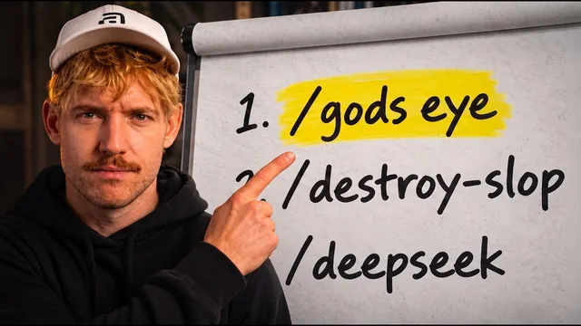

지금 당장 챙겨야 할 깃허브 레포 7개 (GPT-6 Astra)

원본 영상 보기 →
- 켜 두기만 해도 되는 안전장치가 이미 나와 있어요
- "만드는 것"과 "서비스로 내놓는 것" 사이의 간극이 사라지고 있어요
- AI 카피는 "그럴싸함"보다 "구체성"으로 승부해야 해요
한 줄 요약
Jack Roberts가 최근 한 달 사이 화제가 된 깃허브 오픈소스·도구 7개를 실제로 켜서 시연합니다. 지구 실시간 관제부터 AI 에이전트 스킬 보안 검사, 빌드한 결과물을 바로 서비스로 배포하는 법, AI스러운 문장을 사람 냄새 나는 카피로 바꾸는 법, 여러 AI 모델을 함께 쓰는 법, 텍스트만으로 프로세스 다이어그램을 그리는 법까지요.
전체 내용 정리
지구 전체를 실시간으로 들여다보는 God's Eye View
항공기, 선박, 위성, 지진, CCTV 카메라 등 공개돼 있는 여러 실시간 데이터를 하나의 지도 위에 모아 보여 주는 오픈소스 프로젝트예요.
단순히 지도를 보는 게 아닙니다. AI 가이드에게 말을 걸어서 "펜타곤으로 데려가 줘", "지금 가장 가까운 비행기 안으로 들어가 줘", "조종석 모드로 바꿔 줘", "근처 라디오 방송 틀어 줘" 같은 요청을 하면 실제로 화면이 그 위치와 모드로 전환돼요. 영상에서는 실제로 보스턴 WBUR 라디오가 재생되는 장면까지 시연됩니다.
여러 공개 API 키를 연결하면 볼 수 있는 정보의 종류가 계속 늘어나고요. 실시간 시각 스토리텔링 영상 제작이나 라이브 데모, 특정 지역 상황을 실시간으로 확인하는 용도에 특히 잘 맞습니다.
깃허브 링크를 열어 챗GPT 아스트라 같은 AI 코딩 도구에 넘기기만 하면 설치가 끝날 정도로 간단해서, 공개된 지 얼마 안 됐는데도 스타 수가 빠르게 늘고 있어요.
엔비디아가 만든 스킬 보안 검사 도구, Skill Spectre
Skill Spectre는 엔비디아가 만든 도구로, 이미 설치해 둔 AI 에이전트 스킬들을 스캔해서 숨겨진 지시문, 과도한 권한 요청, 데이터 유출 가능성이 있는지 검사하고 위험도 점수를 매겨 줍니다. 현재 1만 7000개 이상의 스타를 받았을 만큼 신뢰도가 높은 프로젝트예요.
사용법은 간단합니다. 깃허브 저장소 URL을 복사한 뒤 AI에게 "내가 설치한 스킬을 전부 이 Skill Spectre로 검사해 줘"라고 요청하면서 해당 저장소 주소를 함께 넘겨 주면, AI가 설치된 스킬 목록을 하나씩 훑으며 안전한지, 뭔가 수상한 접근 권한을 요구하고 있진 않은지 대신 확인해 줍니다.
만든 결과물을 원클릭으로 서비스로, Flute
Flute는 챗GPT나 클로드, 커서 같은 도구 안에서 만든 디자인과 화면을 그대로 가져다가 클릭 한 번으로 실제 작동하는 앱으로 배포해 주는 플랫폼이에요.
로그인·회원가입 같은 인증, 폼 저장, 데이터베이스, 이메일·알림 발송까지 백엔드에 필요한 부분을 전부 대신 처리해 줍니다. "아이디어를 챗봇 안에서 만들었지만 실제로 쓸 수 있는 서비스로 만들려면 개발자가 필요하다"는 문제를 해결해 주는 거죠.
영상에서는 챗GPT 안에서 신청 폼(회사명, 개선하고 싶은 점, 자동화하고 싶은 업무, 투자 관련 질문 등)을 만든 뒤, "이걸 Flute에 연결해서 앱으로 배포해 줘"라고 요청하는 것만으로 인증 절차를 거쳐 실제 배포까지 이어지는 과정을 보여 줘요. 배포 후에는 Flute 대시보드에서 요금제와 사용량을 확인할 수 있고, 무료 요금제로도 시작할 수 있습니다.
AI 문체를 사람 글로 바꿔 주는 Slop Monster
Slop Monster는 Jack이 직접 만든 도구로, 어색한 "AI 문체(AI slop)"를 사람이 쓴 자연스러운 문장으로 다시 써 주는 역할을 해요.
시중의 여러 AI 탐지·교정 도구의 좋은 부분만 모으고, 기존 도구들이 놓치던 "세일즈·마케팅 관점"까지 검사 항목에 추가한 게 특징입니다.
채점 기준은 어휘 선택, AI 특유의 문장 구조, 문장부호 리듬, 그리고 AI가 유독 좋아하는 "세 가지 나열(rule of three)" 패턴까지예요. 스티브 크룩의 『Don't Make Me Think』, 대니얼 프리슬리, 알렉스 호르모지의 오퍼 이론 같은 카피라이팅 원칙을 근거로 다시 써 줍니다.
실제 예시가 명확해요.
- "믿을 수 있고, 신뢰할 수 있고, 오래 가는" → "지붕널 하나당 못 6개, 모든 지붕널에 동일하게"
- "업계 최고 수준의 자재로 비교 불가능한 보호력을 제공합니다" → "바람·우박·햇빛 테스트를 통과한 제조사의 자재만 씁니다"
이메일이든 웹사이트 카피든 아무 텍스트나 붙여넣고 돌릴 수 있으며 완전 무료입니다.
두 AI를 동시에 쓰는 법
현재 가장 강력한 두 모델로 꼽히는 클로드 페이블 5.1과 챗GPT 아스트라를 동시에 굴리는 "클로드 × 코덱스 루프"는, 한쪽 모델이 계획을 짜면 다른 쪽 모델이 그 계획의 약점을 찾아내는 방식으로 서로 교차 검증하게 만드는 워크플로우예요.
어떤 모델이든 각자의 사각지대가 있기 때문에, 의사결정이 중요하고 복잡한 빌드 작업일 때(전체 작업의 약 10% 정도) 이 루프를 켜 두면 한쪽이 놓친 실수를 다른 쪽이 잡아낼 수 있습니다.
한편 딥시크는 최근 자체 "하네스(harness)"를 내놨어요. 이는 챗GPT 앱이나 클로드 앱처럼 모델을 감싸는 작업 환경을 뜻하는데, 자동차에 비유하면 "차체"입니다. 모델(운전자)과 하네스(차)를 자유롭게 조합해 쓸 수 있다는 게 핵심이에요.
딥시크 하네스는 파일, 터미널, 브라우저에 접근할 수 있고 완전히 커스터마이징 가능합니다. 저렴한 딥시크 V4.1 모델을 음성 명령 한 번으로 바로 실행할 수 있어서(영상에서는 Glide라는 음성 입력 서비스로 시연합니다), 다른 도구에서 토큰 한도에 자주 걸리는 사람에게 대안이 될 수 있어요.
텍스트만으로 다이어그램을 그리는 ArchiFi
ArchiFi는 평범한 문장으로 설명한 프로세스를 몇 초 만에 아키텍처·플로우 다이어그램으로 시각화해 주는 도구입니다.
영상에서는 "알렉스 호르모지 방식의 최적 세일즈 시스템을 ArchiFi로 그려 줘"라고 요청하자 마케팅 → 오퍼 제시 → 수요 창출 → 관심 확보로 이어지는 흐름도가 만들어지고, 각 단계를 펼치면 앞뒤로 연결된 세부 흐름까지 보여 주는 과정을 시연해요.
클래식 모드, 시그널 플로우 모드, 다크 모드 등 여러 보기 방식을 지원하고 내보내기·공유도 가능합니다. 복잡한 시스템(영상에서는 500단계짜리 프로세스 예시도 언급해요) 온보딩, 인수인계, 코드 리뷰처럼 "말로 설명하기보다 그림으로 보여 주는 게 나은" 상황에 특히 유용하고 무료로 쓸 수 있습니다.
핵심 인사이트
- 켜 두기만 해도 되는 안전장치가 이미 나와 있어요: Skill Spectre처럼 설치한 AI 에이전트 스킬을 자동으로 점검해 주는 도구가 존재한다는 것 자체가, AI 에이전트를 업무에 들이는 사람이라면 이제 "잘 되나"만 볼 게 아니라 "안전한가"도 같이 확인해야 하는 단계에 왔다는 신호입니다.
- "만드는 것"과 "서비스로 내놓는 것" 사이의 간극이 사라지고 있어요: Flute처럼 챗봇 안에서 만든 결과물을 인증과 데이터베이스까지 포함해 바로 배포해 주는 도구가 나오면서, 비개발자도 "아이디어 → 실제 쓸 수 있는 서비스"까지 혼자 끝낼 수 있는 범위가 넓어지고 있습니다.
- AI 카피는 "그럴싸함"보다 "구체성"으로 승부해야 해요: Slop Monster의 채점 기준(어휘, 문장 구조, 세 가지 나열 패턴, 세일즈 관점)은 AI가 쓴 글이 왜 밋밋하게 느껴지는지를 구조적으로 짚어 주고, 그걸 숫자와 구체적 근거로 바꾸라는 방향을 제시합니다.
오늘 당장 해볼 것
- 사용 중인 AI 에이전트나 스킬이 있다면 깃허브에서 "nvidia skill-spectre"를 검색해 저장소 링크를 복사한 뒤, "내가 설치한 스킬을 전부 이 저장소로 검사해 줘"라고 요청해 위험도를 한 번 점검해 보세요.
- 홈페이지 소개 문구나 최근 보낸 안내 이메일 한 통을 골라 Slop Monster에 넣어 보세요. "믿을 수 있는", "최고의" 같은 뻔한 표현이 얼마나 구체적인 문장으로 바뀌는지 전후를 비교해 보면 재밌습니다.
- 반복적으로 설명하기 번거로운 업무 프로세스를 한 문단으로 정리해 ArchiFi에 넣어 보세요. 신규 고객 온보딩 순서나 상담 문의 처리 흐름 같은 거요. 그림으로 뽑힌 흐름도를 팀 공유용 자료로 저장하면 됩니다.